Play
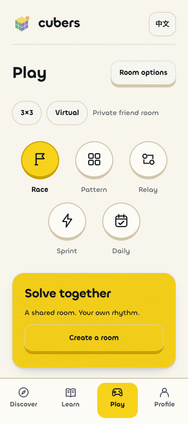

Coordinated task accents preserve the existing pathway and profile structure. Selected games change their main accent; waiting game buttons and the lower room controls keep their original scheme. Screens show isolated synthetic accounts, with real fixture progress.
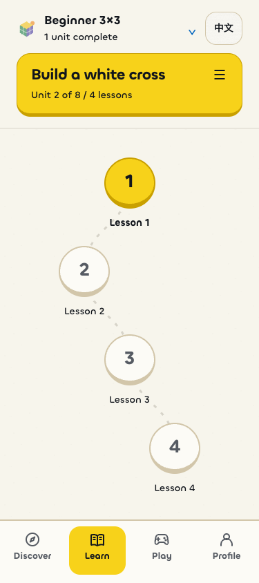
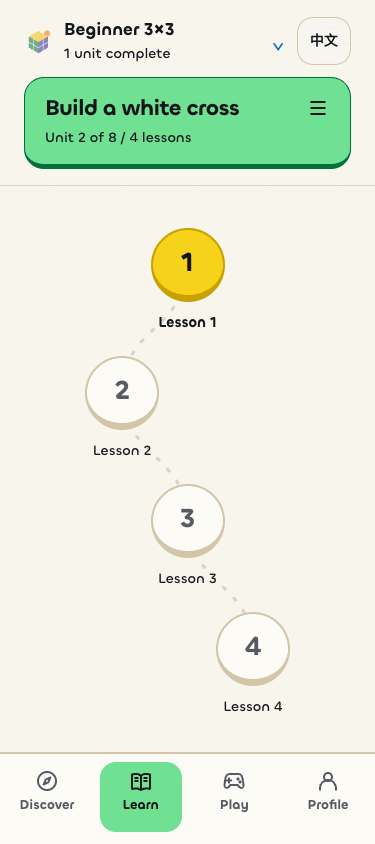

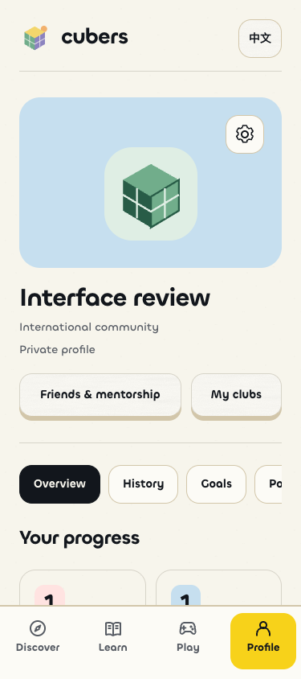
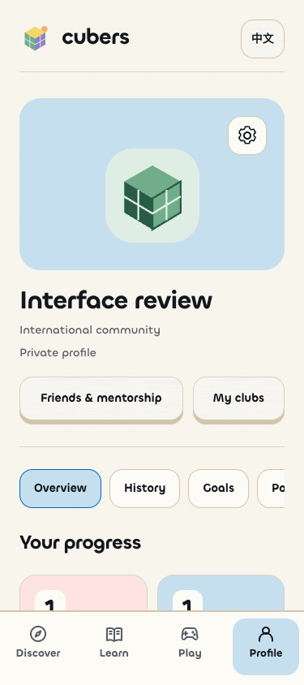
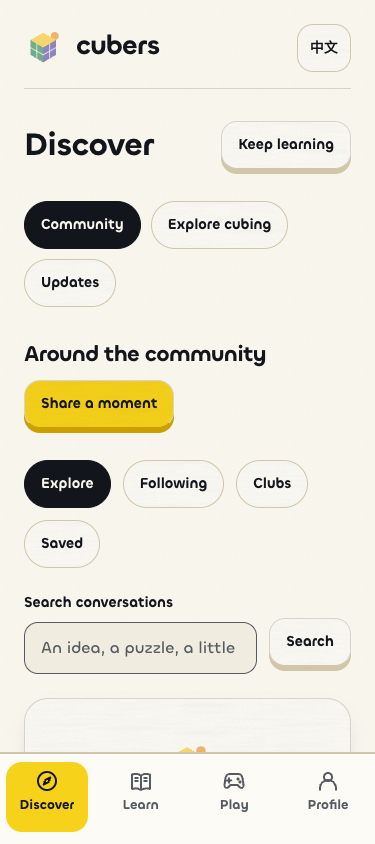
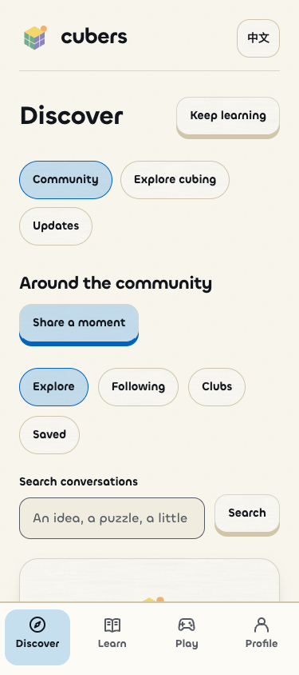
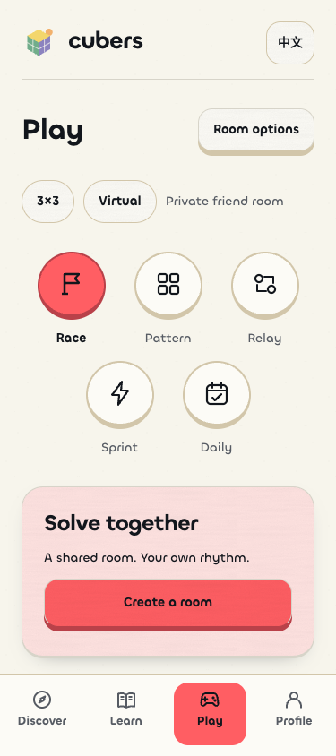
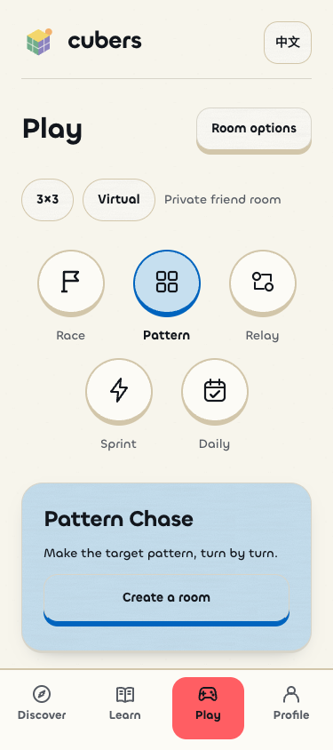
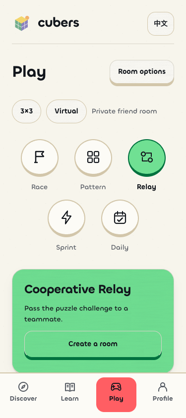
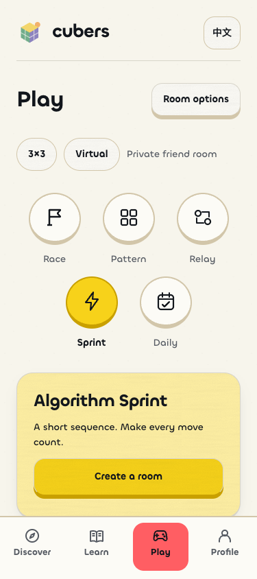
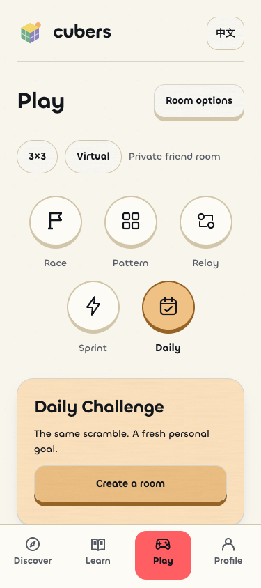